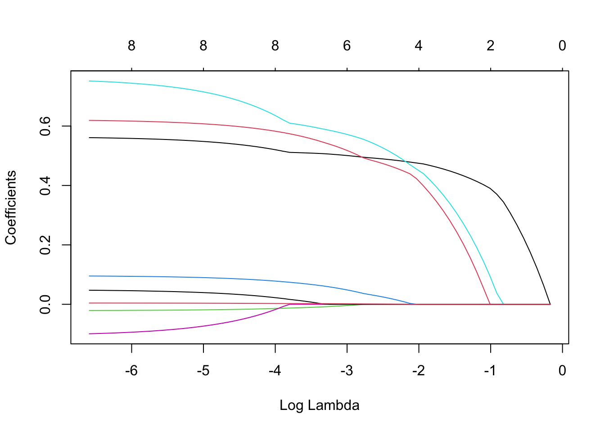
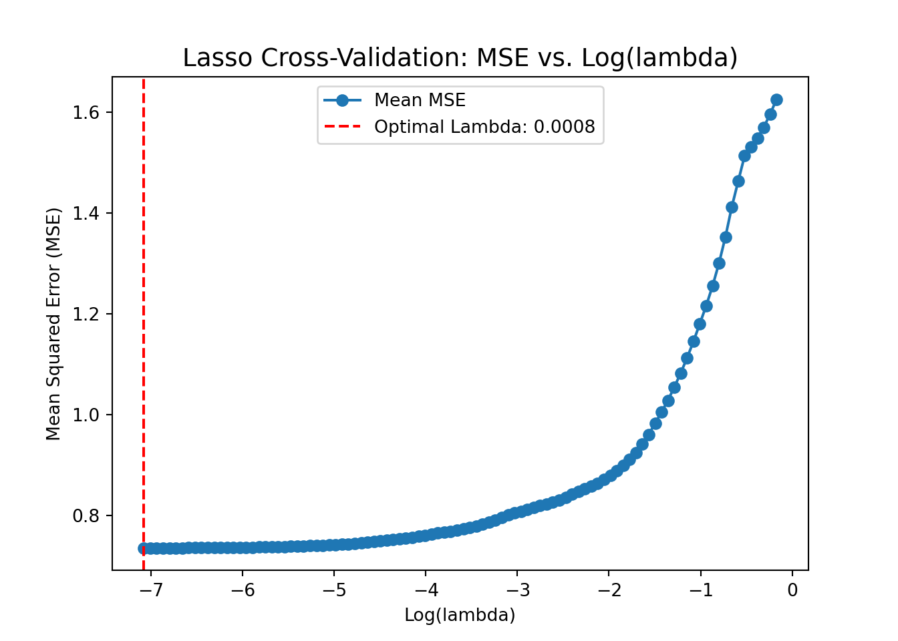
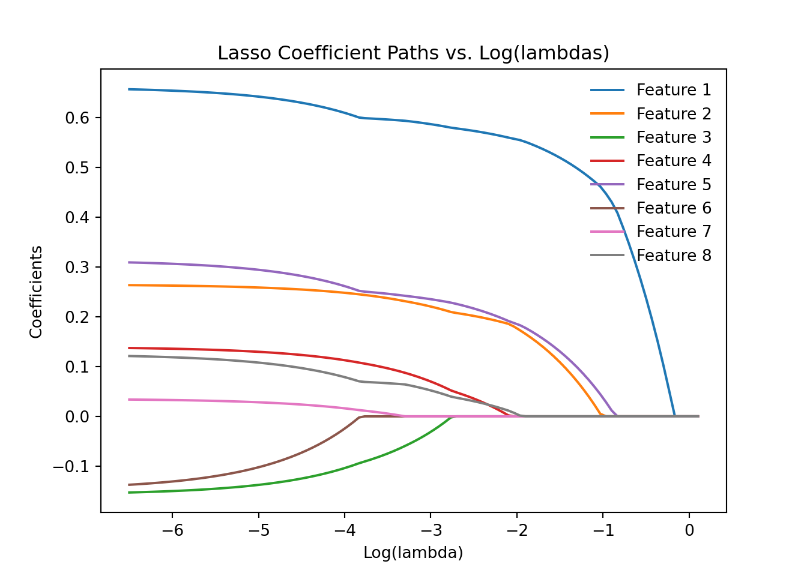

Loading required package: MatrixLoaded glmnet 4.1-8prostate <- read.csv("../data/prostate.csv")
lasso_fit <- cv.glmnet(x = data.matrix(prostate[, 1:8]),
y = prostate$lpsa, nfolds = 10,
alpha = 1)lasso_fit$lambda.min[1] 0.02961435lasso_fit$lambda.1se[1] 0.2089234plot(lasso_fit)
plot(lasso_fit$glmnet.fit, "lambda")
coef(lasso_fit, s = "lambda.min")9 x 1 sparse Matrix of class "dgCMatrix"
s1
(Intercept) 0.169279155
lcavol 0.509085165
lweight 0.558643448
age -0.010256773
lbph 0.067418867
svi 0.598979114
lcp .
gleason 0.008139093
pgg45 0.002387475coef(lasso_fit, s = "lambda.1se")9 x 1 sparse Matrix of class "dgCMatrix"
s1
(Intercept) 0.7820637
lcavol 0.4485189
lweight 0.2804033
age .
lbph .
svi 0.3383490
lcp .
gleason .
pgg45 . import pandas as pd
import numpy as np
import matplotlib.pyplot as plt
from sklearn.linear_model import Lasso, LassoCV
from sklearn.preprocessing import StandardScalerprostate = pd.read_csv("../data/prostate.csv")
X = prostate.iloc[:, 0:8]
y = prostate["lpsa"]
# Standardize predictors
scaler = StandardScaler()
X_scaled = scaler.fit_transform(X)
# Perform Lasso regression with cross-validation
# Automatically selects alphas
lasso_cv = LassoCV(alphas=None, cv=10, random_state=2025)
lasso_cv.fit(X_scaled, y)LassoCV(cv=10, random_state=2025)In a Jupyter environment, please rerun this cell to show the HTML representation or trust the notebook.
LassoCV(cv=10, random_state=2025)
# Plot MSE across alphas
mse_path = np.mean(lasso_cv.mse_path_, axis=1)
plt.plot(np.log(lasso_cv.alphas_), mse_path, marker='o', label="Mean MSE")
plt.axvline(np.log(lasso_cv.alpha_), color="red", linestyle="--",
label=f"Optimal Lambda: {lasso_cv.alpha_:.4f}")
plt.xlabel("Log(lambda)")
plt.ylabel("Mean Squared Error (MSE)")
plt.title("Lasso Cross-Validation: MSE vs. Log(lambda)", fontsize=14)
plt.legend()
plt.show()
optimal_lambda = lasso_cv.alpha_
optimal_lambda0.0008434274382607599lasso_cv.coef_array([ 0.65931859, 0.26435421, -0.15492328, 0.13834575, 0.31131745,
-0.14188085, 0.03451933, 0.12292875])lasso_cv.intercept_2.4783868783505154# Reverse standardization
std_devs = scaler.scale_ # Feature standard deviations
means = scaler.mean_ # Feature means
coef_original = lasso_cv.coef_ / std_devs
coef_originalarray([ 0.56230244, 0.62026266, -0.02091681, 0.09585318, 0.75589027,
-0.10199745, 0.04805015, 0.00438119])intercept_original = lasso_cv.intercept_ - np.sum(lasso_cv.coef_ * means / std_devs)
intercept_original0.18140520823512718lambdas = np.logspace(-6.5, 0.1, 100, base=np.exp(1))
coefficients = []
for lam in lambdas:
lasso = Lasso(alpha=lam, fit_intercept=True, max_iter=10000)
lasso.fit(X_scaled, y)
coefficients.append(lasso.coef_)Lasso(alpha=1.1051709180756477, max_iter=10000)In a Jupyter environment, please rerun this cell to show the HTML representation or trust the notebook.
Lasso(alpha=1.1051709180756477, max_iter=10000)
coefficients = np.array(coefficients)
# Plot coefficient paths
for i in range(coefficients.shape[1]):
plt.plot(np.log(lambdas), coefficients[:, i], label=f"Feature {i+1}")
plt.xlabel("Log(lambda)")
plt.ylabel("Coefficients")
plt.title("Lasso Coefficient Paths vs. Log(lambdas)")
plt.legend(loc="upper right", frameon=False)
plt.show()
lasso = Lasso(alpha=0.21, fit_intercept=True)
lasso.fit(X_scaled, y)Lasso(alpha=0.21)In a Jupyter environment, please rerun this cell to show the HTML representation or trust the notebook.
Lasso(alpha=0.21)
lasso.coef_array([0.52543798, 0.1186707 , 0. , 0. , 0.13865508,
0. , 0. , 0. ])